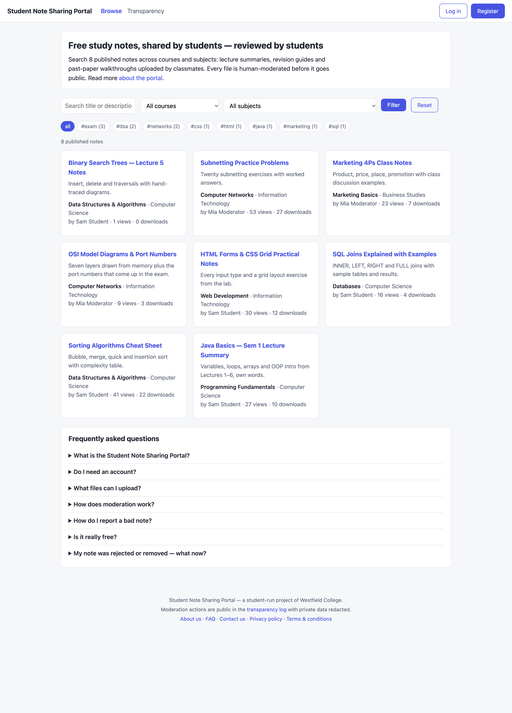
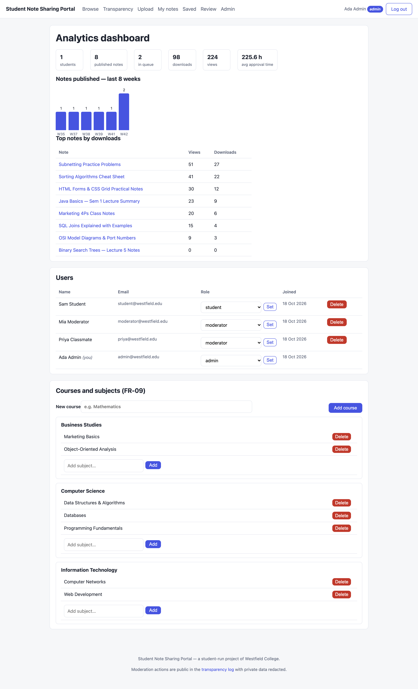
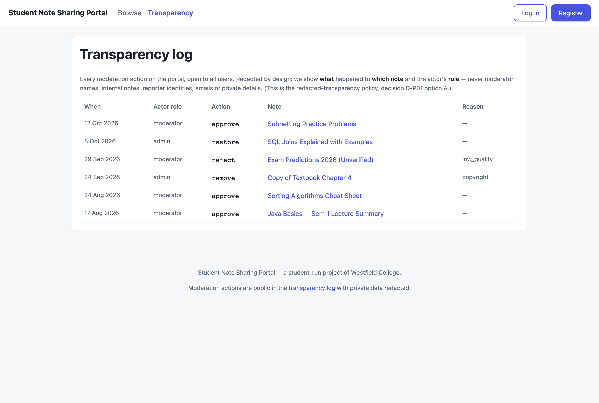

Heads-up: this page is the project hub, not the live app. The full app needs PHP + MySQL, which static/JavaScript hosts like Vercel don't provide — run it locally with XAMPP (3 steps below) or host the same files on any PHP hosting.
What it looks like



Run it locally in 3 steps
- Install XAMPP, copy the
student-note-portal/folder intohtdocs/. - Import the database: open phpMyAdmin → Import →
note_portal.sql. - Open
http://localhost/student-note-portal/and log in asadmin@westfield.edu/admin123.